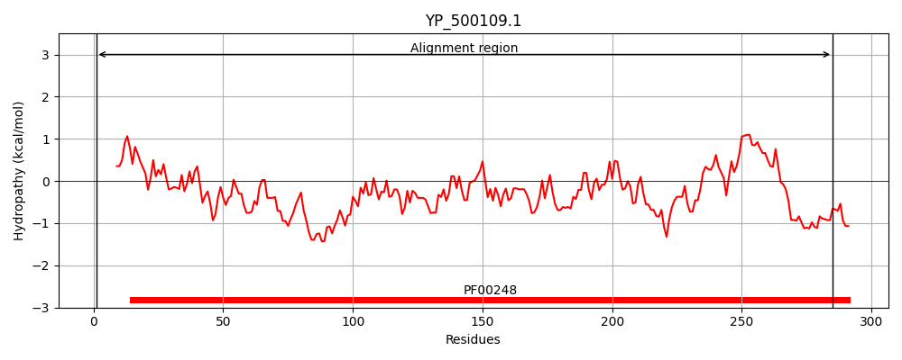
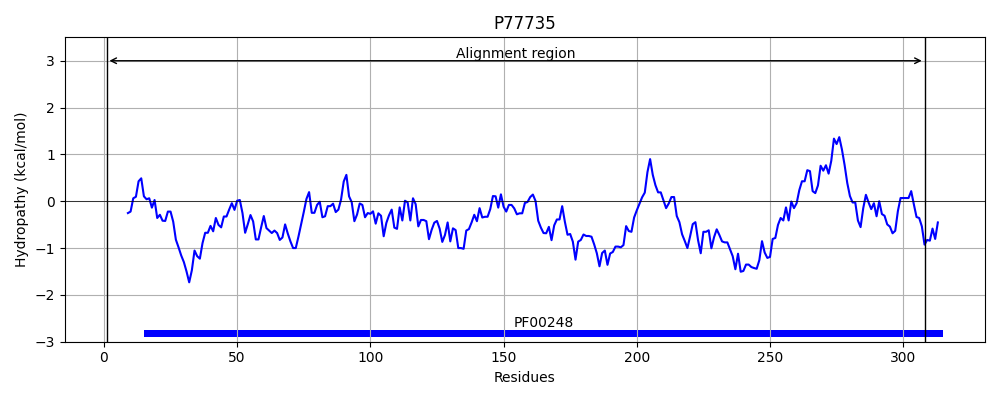
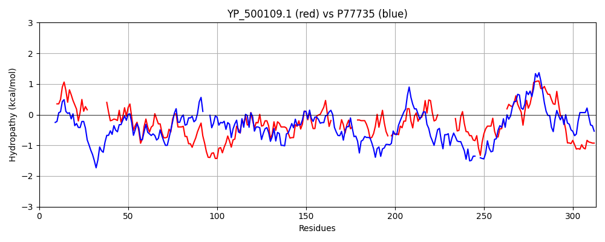

Hit Accession: P77735
Hit TCID: 8.A.5.1.6
Hit Description: gnl|BL_ORD_ID|11533 gnl|TC-DB|P77735|8.A.5.1.6 Uncharacterized oxidoreductase YajO OS=Escherichia coli (strain K12) GN=yajO PE=3 SV=2
Mach Len: 313
e:0.000000
Query TMS Count : 0
Hit TMS Count: 0
TMS-Overlap Score: 0.000000
Predicted Substrates:None
BLAST Alignment:
Score: 286 , Bit scores: 114 bits, E-value: 8.6e-30, Alignment length: 313, Percentage identity: 27
Query: 1 MQKNIL-KSGISLSELGLGCMSLGTDLK----------KAEQIIDCAVENGITYFDTADMYDKGINESVVGKALLKYQQRDDIFIGTKVGNRLTKDGSTTWDPSKSYIKEAVKGSLKRLGIDHIDLYQLHGGTIDDPLDETISAFDELKQEGIIRAYGISSIRPN----VIDYYLKH--SQIETIMSQFNLIDNRPE-SLLDAIHNNDVKVLARGPVSKGLLTSN---------SVNVLDNKFKDGIFDYSHDELGETIASI-KEIESNLSALTFSYLTSHDVLGSIIVGASSVDQLKENIENYHTKVSLDQI 285
MQ N L K+ + +S L LGCM+ G + + II A+E GI +FDTA+ Y G +E +VG+AL + +R+D+ + TKV +R+ G S++ I ++ SL+RLG+D++D+ Q+H + P++ET+ A +++ + G R G SS+ + ++ +H +Q ++ +NLI E +L + V V+ P+++G LT S V N +K+ D + ++ E + + +E+ + + + ++L S + + I+G S +QL E + + +QI
Sbjct: 1 MQYNPLGKTDLRVSRLCLGCMTFGEPDRGNHAWTLPEESSRPIIKRALEGGINFFDTANSYSDGSSEEIVGRALRDFARREDVVVATKVFHRV---GDLPEGLSRAQILRSIDDSLRRLGMDYVDILQIHRWDYNTPIEETLEALNDVVKAGKARYIGASSMHASQFAQALELQKQHGWAQFVSMQDHYNLIYREEEREMLPLCYQEGVAVIPWSPLARGRLTRPWGETTARLVSDEVGKNLYKES--DENDAQIAERLTGVSEELGATRAQVALAWLLSKPGIAAPIIGTSREEQLDELLNAVDITLKPEQI 308 | Protein Hydropathy Plots: |
|---|
|  |  |
Pairwise Alignment-Hydropathy Plot:
|
|---|
|  |